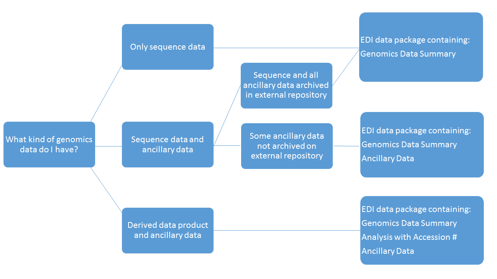

5 Genomic and Metagenomic Data
Contributors: Hap Garritt, Tim Whiteaker, Sarah Elmendorf, An Nguyen, Gastil Gastil-Buhl, Renée Brown, Corinna Gries, and Li Kui
5.1 Introduction
Genomic and metagenomic data that originate from gene sequencing techniques are most often stored in genomic repositories such as National Center for Biotechnology Information (NCBI) GenBank and the European Nucleotide Archive. Currently these data are not always easily discoverable in the context of other environmental data from the same project or research site. Here, we describe best practices to (a) allow discoverability using Ecological Metadata Language (EML) metadata; (b) archive ancillary data that are not included in the genomic repository; and (c) archive a data product derived from genomics data (without including the raw sequence data), while preserving access to original data in the associated genomic repository.
This document was written for the intended audience of a Long Term Ecological Research (LTER) information manager (IM), though it is applicable to anyone handling genomics data in the context of a larger ecological research program. EDI is used as the representative data repository in this document. The same practices could be applied to other similar repositories.
5.1.1 Background
Genomic data refers to the complete genetic information (either DNA or RNA) of an organism. Metagenomic data refers to the study of genomes recovered from environmental samples (water, soils etc.), i.e., genomes from multiple organisms. The sequence data consists of the order and arrangement of DNA bases (Adenine (A), Cytosine (C), Guanine (G), Thymine (T)) associated with individual species or multiple organisms from environmental samples.
Genomic and metagenomic sequence datasets can be very large, include many sequence runs and typically are stored in associated community repositories that include specialized tools for searching, accessing, and analyzing (e.g., BLAST). Thus it is preferable that a specialized sequence database be the primary archive for the sequences themselves, rather than a generalist repository such as the Environmental Data Initiative (EDI). Sequence repositories assign unique identifiers to projects, samples and/or single sequences, often called accession numbers, which can be used to locate sequence data.
There are numerous genomic databases. The investigator is typically responsible for sequence data submission to their repository of choice and most are familiar with the data submission process as it is often required for subsequent manuscript publication. Therefore, selection of a genomic repository and submission of genomic data to a genomic repository is outside the scope of this document, although the recommended data repositories for nucleic acid sequence data for the journal Scientific Data may provide some useful guidance (https://www.nature.com/sdata/policies/repositories#nuc). The key point here is that the genomic researcher should be in communication with the information manager about where data have been submitted including accession numbers and metadata important for discovery.
This document discusses best practices for making these sequence data discoverable in the data repository (EDI) that holds related environmental measurements and in the context of a larger research site in general and in particular, when these additional measurements (of biochemistry, environmental conditions) were taken on the same samples that have been used for genetic analysis. Note that each genomic repository may have its own mechanism for reverse linking to such contextual data in EDI, and these mechanisms are beyond the scope of this document.
Furthermore, a distinction should be made between raw/original sequence data and derived products such as metagenome-assembled genomes (MAGS) and operational taxonomic units (OTUs), which are dependent upon algorithms/post processing of raw data. These data products (frequently a community analysis) need to be archived in EDI.
5.1.2 Types of Genomics Datasets Commonly Encountered
An information manager typically encounters one of four types of genomics datasets:
- Only sequence data
- Sequence data with ancillary environmental data already submitted to the genetic repository
- Sequence data with ancillary environmental data not yet archived
- Derived data product with or without ancillary environmental data
5.2 Recommendations for Datasets

Figure 1. Decision tree and workflow for different cases of genetic sequence data
The remainder of this document describes best practices in these sections:
- Metadata for all genomics datasets
- Genomics data summary
- Genomics data with ancillary data
- Derived data products
5.2.1 Metadata for All Genomics Datasets Archived in EDI
Do be as complete as feasible with the metadata, including creator lists, maintenance, contacts, project description, and so on, as described in EML Best Practices. Include geographic coverage, temporal coverage, and taxonomic coverage if possible so that users can locate the dataset by space, time, and taxa. Guidance for specific fields is provided below.
- Dataset title - Follow general best practices for dataset titles. Consider using the same title as in the genomics repository if that title makes sense.
- Abstract - Study description giving rise to the genomics data. Indicate that more details are available in the genomics repository, and provide a link to the repository. You could Include links for related datasets here, e.g., for water or soil chemistry, but we recommend including such data in the same data package with the genomics data summary.
- Keywords - In addition to keywords typically used by the site, use keywords that help identify this as a genomics dataset, such as:
- genomics
- metagenomics
- target gene or subfragment (e.g. 16S rRNA, 18S rRNA, nif, amoA, rpo, ITS)
- the sequencing technique (e.g., Sanger, pyrosequencing, ABI-solid)
- Consider using keywords that the investigator supplied on genomics data submission templates, such as MIxS templates.
- the genomics repository name
- If the data package includes a summary table of what’s available at a genomics repository, include the keyword “data inventory” as per the best practices for data linked at other repositories.
- For genomics data with ancillary data, regardless of where they are archived, include relevant keywords such as:
- nitrogen
- soil moisture
- For derived data products, include relevant keyword such as
- OTU
- population
- community
- Dataset Methods - Describe sampling and sequencing methods here. Describe methods for collection and processing of ancillary data as appropriate.
- Literature - Take advantage of EML 2.2 capabilities for citing publications to reference papers associated with the genomics data.
5.2.2 Genomics Data Summary
Every genomics dataset should contain at least one table with a summary or index of what is stored in a genomics repository. This enables all data from a particular genomics dataset to be discovered. Below are suggested attributes for this data table. Some attributes may not be appropriate for all datasets, and additional attributes could be provided (e.g., from MIxS templates) if available. Note that the granularity of data depends upon which database link is used for accession number from the genomics data repository. For example, in NCBI, there are accession numbers for a project, samples within the project, and sequence datasets from a given sample. The information manager should work with the genomics researcher to determine for which level of granularity accession numbers should be provided in related data packages in EDI.
| Attribute | Description |
|---|---|
| Sample_ID | Generally the locally used identifier for the sample, accession numbers may be used instead |
| Collection_date | Date of sample collection |
| Location_name | Locally used name of collection site |
| Latitude | Latitude of sampling area in decimal degrees |
| Longitude | Longitude of sampling area in decimal degrees |
| Genomics_repository | Name of genomics repository |
| Accession_number | Range of accession numbers or single accession number for a study. Some studies have hundreds of accession numbers. |
| Accession_link | Accession number based URL for the dataset in the genomics repository, e.g., https://www.ncbi.nlm.nih.gov/nuccore/AY741555. If providing a range of accession numbers, you may have to be creative, for example, by providing a search URL that will return the desired list, e.g., https://www.ncbi.nlm.nih.gov/popset/?term=AY741555. Recommendation is to link to the widest level of granularity for which additional data useful to interpretation are ONLY archived on EDI. As an example, if an OTU table which is archived on EDI provides taxonomic identifications for many samples, it would be most useful for an end user if that table on EDI also contained the corresponding BioSample number from NCBI. However, if there are no derived products on EDI that exist on a per sample basis, then linking to the larger BioProject would be sufficient, because NCBI provides the child BioSample hierarchy under BioProject that will allow a user to discover all the data. |
| seq_method | Sequencing method used; e.g., Sanger, pyrosequencing, ABI-solid. This attribute is used in MIxS templates, where it is called seq_meth. |
| internal_control_seq | Internal control sequences used in the dataset, e.g., Thermus Thermophilus. If no internal control is added then you could leave you could use none or indicate as such iethods section in EML if the same applies to all records in the dataset. |
| env_biome | Biomes are defined based on factors such as plant structures, leaf types, plant spacing, and other factors like climate. Biome should be treated as the descriptor of the broad ecological context of a sample. Examples include: estuarine biome, marine coral reef biome, temperate deciduous broadleaf forest, or subtropical desert biome. EnvO (v 2013-06-14) terms can be found via the link: www.environmentontology.org/Browse-EnvO by searching for biome. This attribute is used in MIxS templates. |
| env_feature | Environmental feature level includes geographic environmental features. Compared to biome, feature is a descriptor of the more local environment. Examples include: harbor, cliff, or lake. EnvO (v 2013-06-14) terms can be found via the link: www.environmentontology.org/Browse-EnvO by searching for environmental feature. This attribute is used in MIxS templates. |
| env_material | The environmental material displaced by the sample, or material in which a sample was embedded, prior to the sampling event. Environmental material terms are generally mass nouns. Examples include: alluvial sediment or coastal sea water. EnvO (v 2013-06-14) terms can be found via the link: www.environmentontology.org/Browse-EnvO by searching for environmental material. This attribute is used in MIxS templates. |
| Taxon_description | If applicable, e.g., Genus species, or taxonomic group |
| Reference_publication | Title of publication providing in-depth context for data |
| Publication_DOI | Publication DOI |
5.2.3 Genomics Data with Ancillary Data
If the ancillary environmental data are to be archived in EDI, make sure a link to the genomics data is established. Include in your data table(s) the following columns at a minimum, which allow the user to identify the related genomics dataset:
- A column identifying the accession number for the related genomics data
- The full URL linking to the related genomics dataset
- The same sample ID as in the genomics data summary table, i.e., use the sample ID as a key field to relate records from one data table to another
Note for sequence data: to align with the Darwin Core standard, you can use a column header “associatedSequences” (https://dwc.tdwg.org/terms/#dwc:associatedSequences) and populate each record with a unique identifier (or list concatenated and separated of identifiers) for the sequence data in the other repository (e.g., SNLBE002-17, a sequence in Barcode Of Life Data system, aka BOLD) or full URL (e.g., http://www.boldsystems.org/index.php/Public_RecordView?processid=SNLBE002-17).
You can specify the genomics repository in the package’s metadata. For the case of more than one related repository, you can include a column identifying the data repository in the data table.
You may include additional columns about the genomics data as needed.
Many external genomics repositories allow ancillary data such as sample chemistry to be archived together with the sequence data. To avoid data duplication, best practices are to archive on EDI only data that have not been archived elsewhere. However, to enable discovery of these ancillary data on the genomics repository, we recommend including appropriate keywords and methods to indicate that environmental (or other, non-sequence) data are available in the related genomics dataset archive.
5.2.4 Derived data products
Data products derived from genomics data frequently are community/population/trait datasets where species, OTUs or traits have been determined from the sequence data. In such datasets it is important to ensure the reliable connection back to the original genomics data via accession numbers.
5.3 Resources
5.3.1 Tips for locating metadata
If information is not readily available for populating metadata in EML, they may be found in the genomics repository.
For data in NCBI, go to theNCBI website and search using accession number or search by accession number in a specific NCBI Database, for example Genes PopSet (the PopSet database is a collection of related DNA sequences derived from population, phylogenetic, mutation and ecosystem studies that have been submitted to NCBI) and there will be lots of metadata that investigators provided when submitting data.
For sequences submitted to the NCBI Sequence Read Archive, there are some easily accessible online tools for generating tables of linked sequence data and their metadata. For an example, go to the example dataset at https://www.ncbi.nlm.nih.gbov/bioproject/305753, and click the number next to SRA Experiments to see a list of all experiments. Then click Send results to Run selector to see a table summarizing geolocations and associated metadata which could be archived at EDI or used to extract metadata for EML preparation.
5.3.2 Links to various repositories
NCBI Databases - list of various databases with search capabilities. See also How to submit data to GenBank.
DNA DataBank of Japan (DDBJ) - list of various databases with search capabilities. See alsoSubmissions.
European Nucleotide Archive (ENA) - list of various databases with search capabilities. See also Submit and update.
Integrated Microbial Genomes & Microbiomes (IMG/M) system from the Joint Genome Institute
BCO-DMO examples for contributing sequence accession numbers.
Barcode of Life DataSystems (BOLD) DNA barcoding is a taxonomic method, that uses one or more standardized short genetic markers in an organism’s DNA to identify it as belonging to a particular species. Through this method unknown DNA samples are identified to registered species based on comparison to a reference library.
MG-RAST (technically an analysis pipeline not a primary repository, but replicates to primary repositories) Replicates to the European Bioinformatics Institute (EMBL-EBI), which in turn replicates to the NCBI Sequence Read Archive (such that data submitted on MG-RAST will automatically appear on all three)